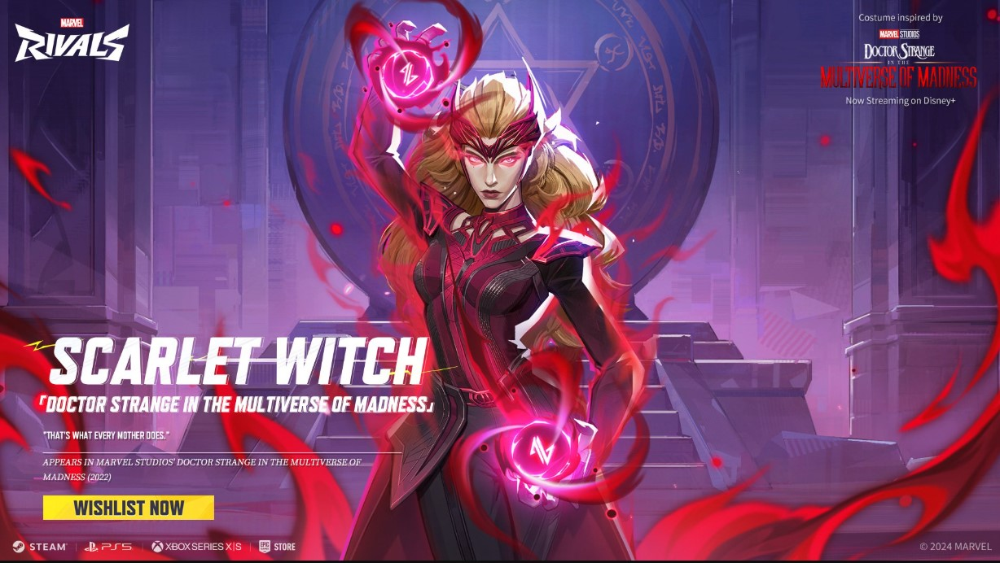
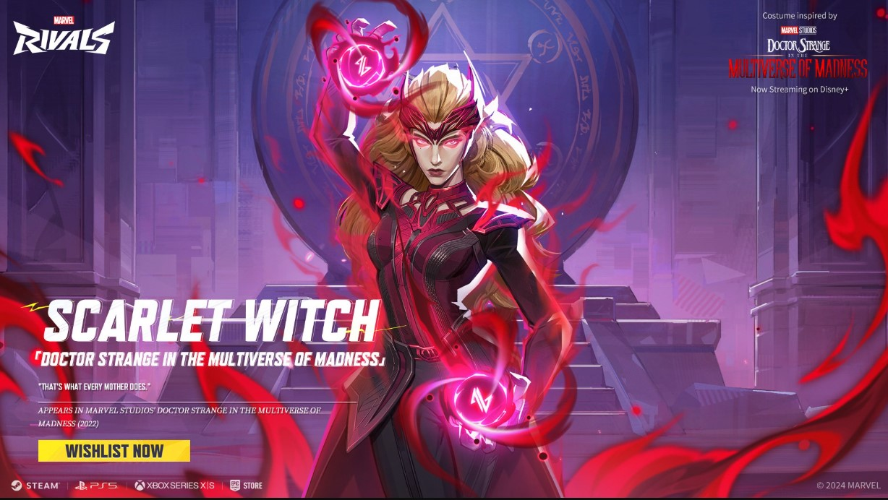
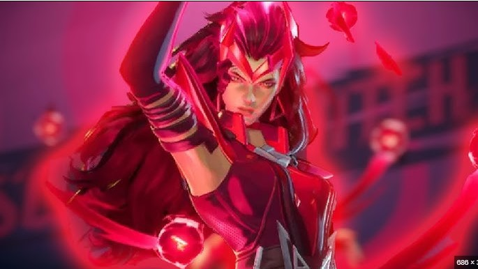
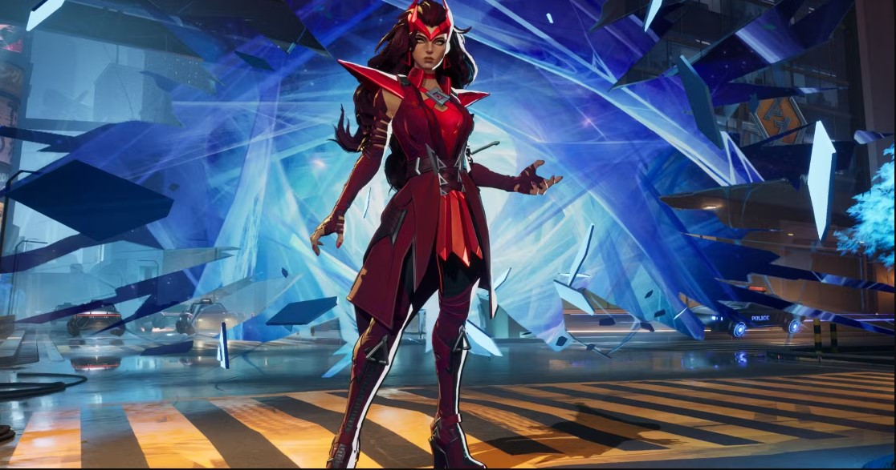
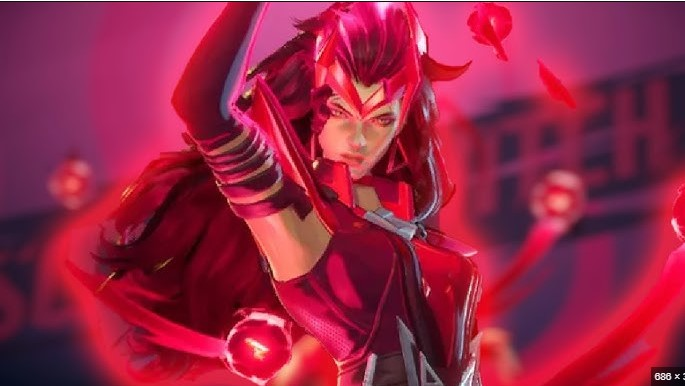
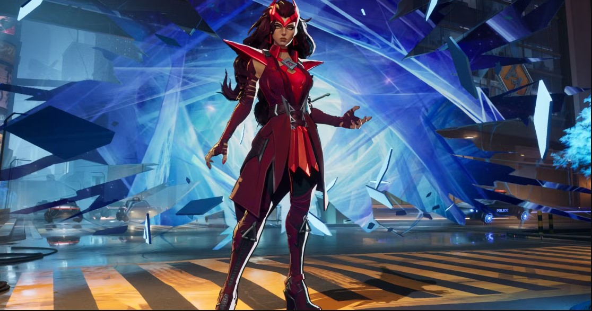

A Feiticeira Escarlate, cujo nome verdadeiro é Wanda Maximoff, é uma das personagens mais poderosas da Marvel. Criada por Stan Lee e Jack Kirby, estreou em X-Men #4 (1964) como parte da Irmandade dos Mutantes. Inicialmente retratada como uma vilã ao lado de seu irmão gêmeo, Mercúrio (Pietro Maximoff), ela depois se redimiu e se juntou aos Vingadores.Seus poderes de manipulação da realidade e magia do caos a tornaram uma das figuras mais temidas e trágicas da Marvel. Sua história mais icônica inclui os eventos de Dinastia M, onde ela altera a realidade e quase extingue os mutantes. Embora frequentemente associada aos X-Men por sua origem mutante, Wanda teve um impacto maior no universo dos Vingadores.
 

 


